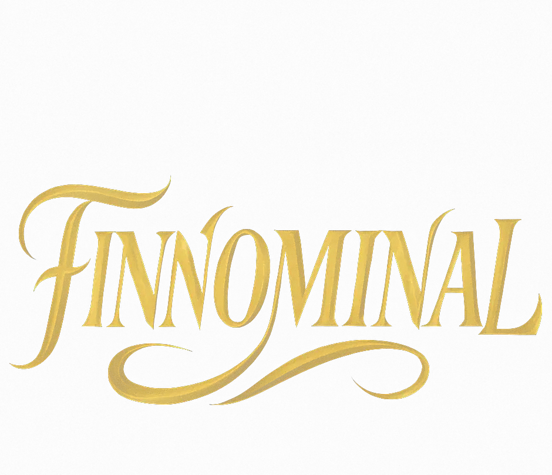
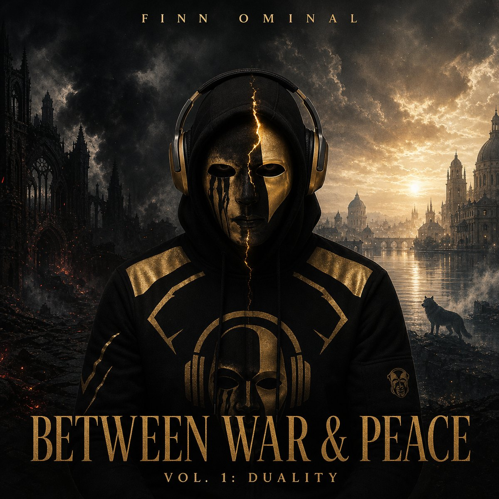
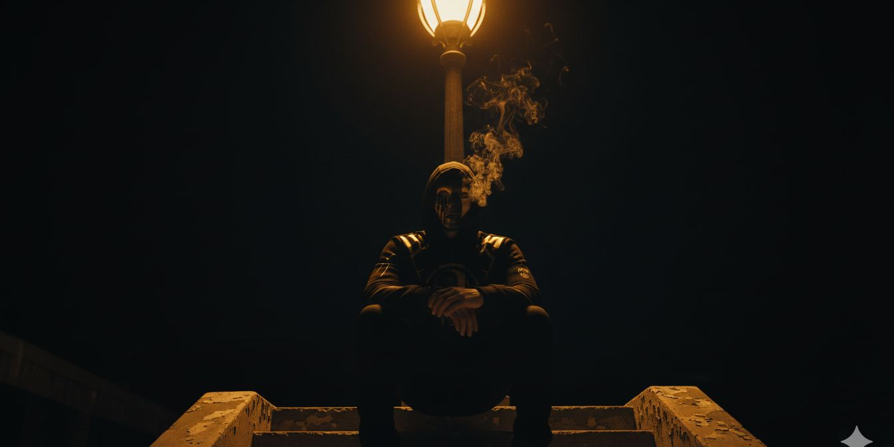
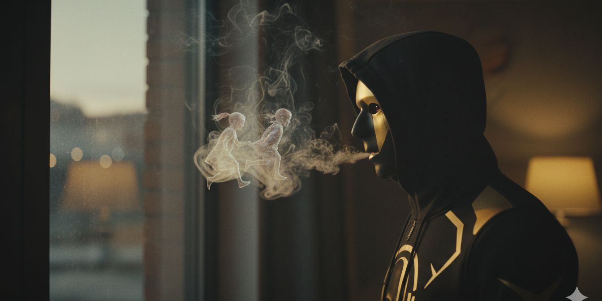
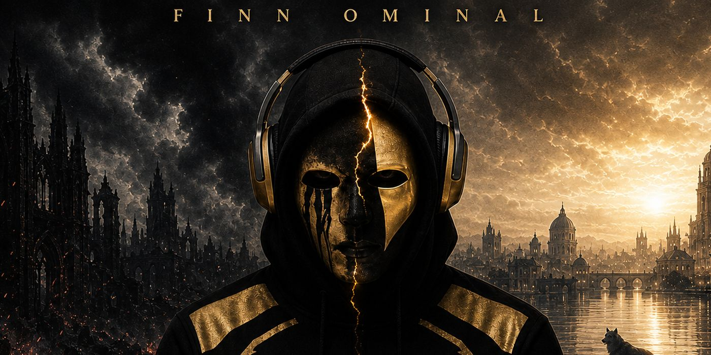
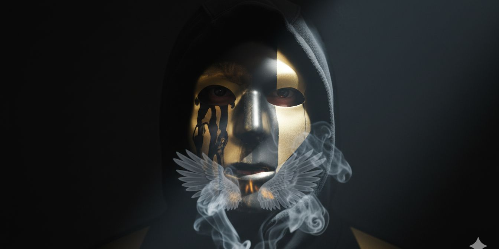
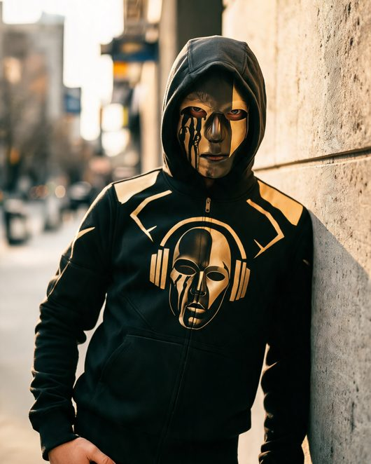

AI Vocal Artist · AI Actor · Music Producer & Engineer
Masked. Brooklyn-rooted. A dancehall storyteller in a cinematic black-and-gold world — human-written, AI-assisted, fully disclosed.
Debut album — Between War & Peace, Vol. 1: Duality — July 31, 2026
The Debut Album — Out July 31, 2026
Between
War & Peace
Vol. 1 · Duality
Seven tracks of controlled pressure — spiritual defense and pack loyalty up front; exhaustion, grief, and confession on the back half, ending in a peace that is hard-won, not soft. War on one side, peace on the other. Every song lives between the two.
- 01 Nuh Weapon
- 02 Wild Dogs
- 03 Foundation
- 04 Sick On Tired
- 05 Gone Too Soon
- 06 Cloud 9 Confessions Out Now
- 07 Leaf & Paper Out Now
Out Now
Streaming Everywhere
The vocal era opened with two singles — Cloud 9 Confessions and Leaf & Paper — built on the beat catalog that started it all. Dancehall at the core; afrobeats and reggaeton in the bloodline.
Released under Urban MindState with the East Side City family.
Watch
The World in Motion

Wild Dogs — Official Music Video

Cloud 9 Confessions — Official Music Video

Sick On Tired — Official Audio
Playlists
Pick Your Lane

Click here to listen to the After Dark Playlist — the nightlife side
Click here to listen to the Before Dawn Playlist — the pressure & the grind
Click here to listen to All Official Audio Every official song, one list
Click here to watch the Visualizers Black & gold in motionProducers & creators — the beat era lives on: Instrumentals · Producer Playlist · East Side City Family

The Story
Between War
and Peace
Finn Ominal is a masked, producer-led virtual artist — a Brooklyn-rooted dancehall storyteller building a cinematic black-and-gold world with human songwriting, human production, and openly disclosed AI-assisted vocals and visuals.
The split mask carries the meaning: war on one side, peace on the other — pain and resilience, the producer behind the curtain and the performer at center. Dancehall at the core; afrobeats and reggaeton in the bloodline.
Produced under Urban MindState with the East Side City family.